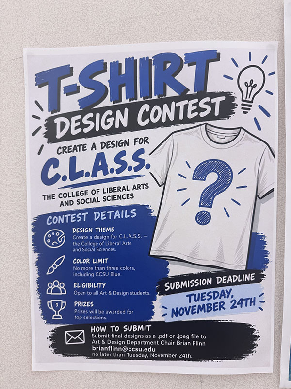
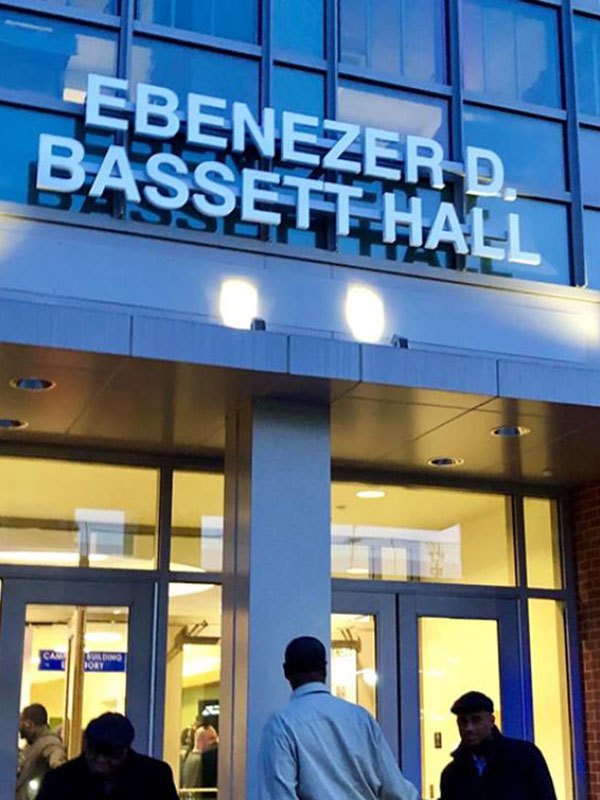
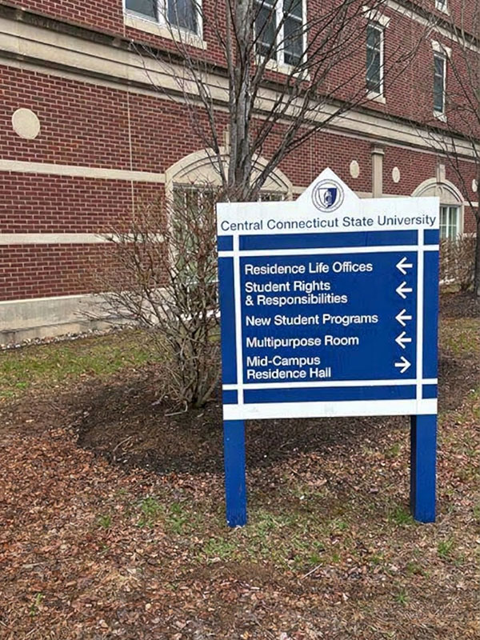
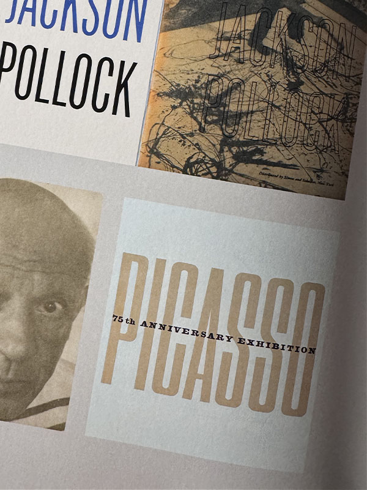
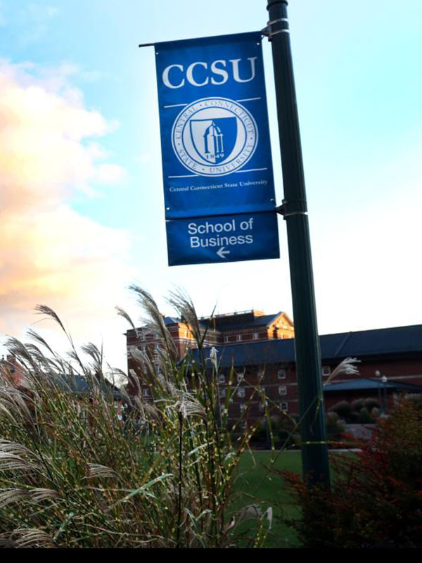
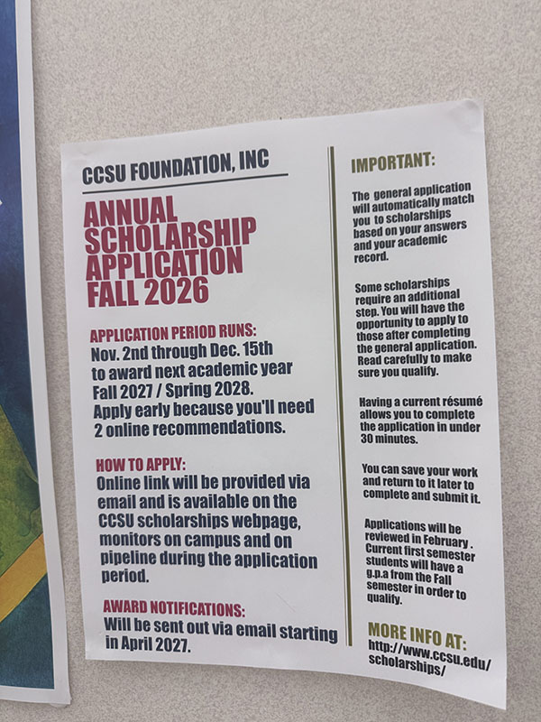
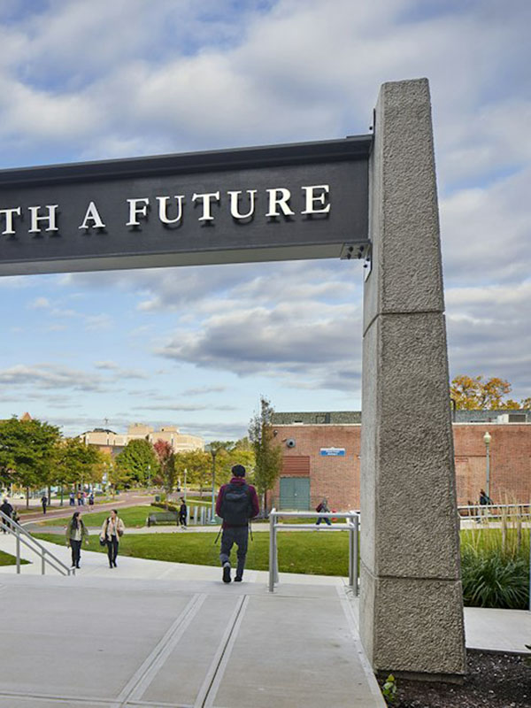
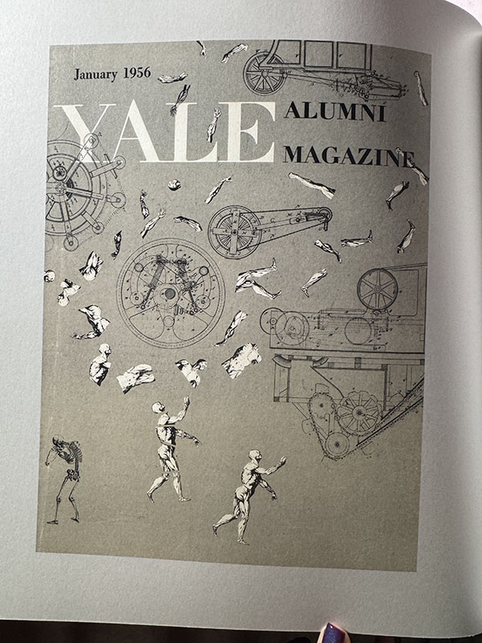

Walking around campus with a camera completely changed how I notice everyday lettering. From bold sans-serif building signs to weathered directional plaques and playful student flyers, typography quietly guides our daily routines. Paying attention to letterforms, spacing, and materials revealed how different typefaces create distinct moods and communicate authority, history, or creativity across the campus environment.







